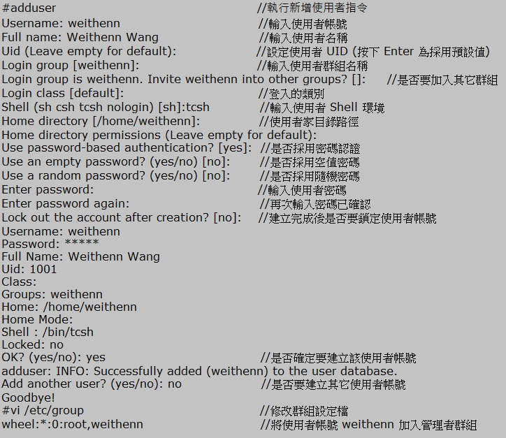

FreeBSD 基礎設定（上）

前言
相信對於大多數的個人電腦使用者來說，或許都以為作業系統只有一套，那就是目前在個人電腦市場上佔有率 90% 的 Microsoft Windows。個人認為造成 Microsoft Windows 受到大家喜愛的原因，不外乎「習慣性」。許多初次接觸個人電腦的人，不論是愛玩線上遊戲的玩家，或者是做文書處理工作的使用者，應該都是從 Windows 作業系統開始學習並使用。這樣的使用習慣造成日後要選擇作業系統時，理所當然選擇自已熟悉又可以輕鬆掌握的作業系統。也正因為 Windows 擁有絕對優勢的市佔率，導致市場上各家軟硬體廠商西瓜靠大邊，推出支援 Windows 的軟體及驅動程式。因此使用者安裝新硬體時 Windows 通常內建有相對應的驅動程式。若沒有相對應的驅動程式，往往會附上安裝程式。安裝驅動程式時按［下一步］的安裝方式，對於使用者來說都不會造成太大的困難。
或許有人會說目前 Linux 作業系統在安裝及設定方面也很便利及直覺啊！ 但是其實對於一般使用者來說操作 Linux 確實具有一定困難度，除了操作介面與使用者的習慣不同導致不適應之外，若發生問題，解決問題所花費的時間及資源也是相對較高的。例如，若使用者安裝的硬體沒有提供支援 Linux 的驅動程式時，一般使用者便很難在短時間內解決這樣的問題。
然而，Microsoft Windows 作業系統的絕對優勢僅適用於桌面端而已。除了桌面端之外，Unix-Like 作業系統以及商業應用的自由軟體不會輸給 Microsoft Windows，比方網頁伺服器中自由軟體 Apache 的市佔率便遠遠勝過 Microsoft Windows IIS 網頁伺服器。本篇文章所要介紹的作業系統，便是在學術單位及企業應用上佔有一席之地的 FreeBSD。
FreeBSD 是經過 BSD、386BSD、4.4BSD 等階段所發展出來的 Unix-Like 作業系統。與 Linux 作業系統不同，開發方式相當具有階層性，採用 Submitter、Committer、Core Team 這種自由互信且層層分工的樹狀結構來進行發展，至今已發展到穩定版本 8.2-Release ，同時還有開發中版本為 9.0-Current。以下說明 FreeBSD 團隊採用的開發分工模式：
* Submitter：一般使用者皆可參與，您可以透過寄送 Bug Report 或在 Mailing List 上面參與相關討論來協助修正 FreeBSD，通常熱心回報以及討論並且持續貢獻的 Submitter 會被進一步提名為 Committer。Committer 擁有更大的權限，能夠貢獻更多，使得 FreeBSD 更好。
* Committer：擁有存取 FreeBSD 版本控制系統 CVS 及 Subversion 的權限，負責維護龐大的軟體套件庫 (Ports Tree)。因此當使用者需要安裝軟體套件時，不必費心到網路上尋找相關 RPM 或是 Tarball，只要切換至軟體相關路徑，輸入執行指令即可安裝套件。上述安裝套件的動作雖然看起來簡單，但其實是 Committer 幫您設定好相關機制的成果，例如安裝某一套件需要相關的相依性套件時系統都會幫您自動下載並安裝。
* Core Team：為整個 FreeBSD 運作的核心團隊，負責統籌管理整個作業系統的運作，此團隊也決定下一版要加入哪些新功能，以及處理其它事務。簡單說就是負責決定整個 FreeBSD 作業系統未來及發展方向的團隊。
在開始學習 FreeBSD 以前，建議您先了解整個作業系統版本的命名規則以便日後選擇適當的版本，FreeBSD 的版本命名方式為 FreeBSD A.B.C-Tag-D 其代表意義如下：
* A：主要版本。
* B：次要版本。
* C：修正版本。
* Tag：共有 Current、Release、Stable 等三種版本，其中 Current 版本為實驗性質版本也就是導入相關新功能的版本，待 Current 版本進入穩定階段後會分支出 Stable 版本，經過相關的更新及修正後達到最高穩定性則是 Release 版本。
* D：安全性更新版本。
由上述命名規則可以知道，若您要嘗試 FreeBSD 作業系統的最新功能請使用 Current 版本，若是要將 FreeBSD 安裝於要求穩定度為重的企業用環境，則請選擇 Release 或 Stable 版本。本文則以 FreeBSD 8.2 Release 版本進行示範與介紹。
建立一般使用者帳號
為了減少不必要的篇幅，本文不會說明如何安裝 FreeBSD，有興趣的讀者可以參考官方使用者手冊 FreeBSD Handbook Chapter2 Installing FreeBSD，相信有基礎的使用者一定能順利無誤的安裝起來。由於 FreeBSD 的設計是以簡潔著稱，因此您會發現安裝 FreeBSD 過程所花費的時間非常短，而安裝完成後預設情況下您只能使用 root 管理者帳號（預設密碼為空白）來登入 FreeBSD。如同管理 Microsoft Windows 主機，同樣的安全性概念，也就是一般性操作時，使用一般使用者帳號即可進行操作；若執行動作需要管理者權限時，才需要轉換身份提升權限。同樣的在首次登入 FreeBSD 後，建議您先為管理者建立一般使用者帳號，再將該使用者帳號加入管理者群組中。下列為透過指令 adduser 建立一般使用者帳號 weithenn 以及相關設定，並將該使用者加入管理者群組 wheel 當中：

▲ 圖1 新增使用者帳號並加入 wheel 群組
設定網路功能
建立好使用者帳號後，接下來設定 FreeBSD 的網路功能。在本文中網路功能是以設定固定 IP 位址來進行說明。要對 FreeBSD 設定固定 IP 位址有兩種方式，一為使用指令 sysinstall 進行互動設定，另一種方式則為將固定 IP 位址、網路遮罩、預設閘道寫入 "/etc/rc.conf" 設定檔， DNS 資訊則寫入 "/etc/resolve.conf" 設定檔中。下列先以 sysinstall 互動設定進行說明，接著再解釋手動寫入設定檔的方式：
1. 執行 sysinstall 指令使系統進入 sysinstall Main Menu 互動視窗中。
2. 進入互動視窗後請選擇【Configure】。
3. 選擇【Networking】再選擇【Interfaces】。
4. 選擇要設定固定 IP 位址的網路卡，本例為 "vxn0 3COM 3c590 / 3c595 Ethernet card"。到了這步系統會先詢問是否要啟動 IPv6 於此網路卡中，這邊選擇 "No"。
5. 系統會詢問是否要啟動此網路卡中的 DHCP 功能，此例選擇 "No"。
6. 接下來為設定固定 IP 位址及相關網路資訊，如下圖所示：
▲ 圖2 設定固定 IP 位址及資訊於網路卡 vxn0 上
透過上述互動設定好固定 IP 位址後，系統會將相關網路設定值寫入相對應的設定檔。例如，固定 IP 位址、網路遮罩、預設閘道資訊寫入至 "/etc/rc.conf" 設定檔內，而 DNS 名稱解析的網路資訊寫入 "/etc/resolv.conf" 設定檔內。所以當我們查看這二個設定檔內容時，可以看到相關網路資訊已寫入。您可依個人喜好來決定要如何設定網路資訊，看您是要使用指令 sysinstall 以互動方式來設定網路，或將相關網路設定值寫入相關設定檔內即可。就個人來說使用互動設定便可設定完成是比較簡單的方式。
▲ 圖3 查看網路設定及 DNS 名稱解析設定
上述設定完成後，您會發現 FreeBSD 主機仍然無法連上 Internet。 雖然您透過互動設定已經設定好相關網路資訊，但系統目前仍未啟動相關設定，例如，套用預設閘道設定值。建議您可以重新啟動主機或執行下列指令即可：
▲ 圖4 手動設定網路資訊及設定預設閘道
當您將主機重新啟動或執行上述指令後，可以使用 ping 指令來判斷主機是否能順利連上 Internet，並進行名稱解析，查看這台主機的網路通訊是卡在哪個環節上。
▲ 圖5 測試主機能否順利與 Internet 主機進行通訊
啟用 SSH 服務
經過上述網路設定及確認檢查後，我們可以確定主機網路功能運作無誤。接下來我們便可著手啟動 SSH 服務，以便屆時透過此服務進行主機遠端管理。要在 FreeBSD 主機中啟動 SSH 服務非常簡單，只需要把相關字串值寫入 "/etc/rc.conf" 設定檔後，執行啟動 SSH 服務的指令即可，如下所示：
▲ 圖6 啟動 SSH 服務
執行指令啟動 SSH 服務後，要如何確定主機上的 SSH 服務是否啟動成功呢？要判斷服務是否正常運作，您可透過如下指令來查詢 SSH Process 是否執行，以及 SSH 服務 Port 是否有聆聽。
▲ 圖7 檢查 SSH Process 及聆聽的 Port
Linux 的 SSH 服務預設情況下允許 root 帳號遠端登入，為何在 FreeBSD 無法使用 root 管理者帳號進行遠端登入？許多習慣在 Linux 上操作的人一定非常不習慣 FreeBSD 這樣的設計。這是因為 FreeBSD 設計理念為希望您使用一般使用者帳號遠端登入，等到需要提升權限時，再提升為管理者權限。若您非常希望使用 root 管理帳號進行遠端登入來管理系統，您可修改 sshd_config 設定檔並重新載入 SSH 服務即可。
▲ 圖8 允許 root 帳戶可以遠端登入
在管理作業系統上，安全性與便利性往往是不可兼得的，當您系統的操作便利性愈高則安全性通常會相對的降低。雖然用管理權限遠端登入很方便，筆者建議您不要使用 root 管理者帳號遠端登入管理系統，有以下兩個理由：一是增加了被入侵的機會（因為管理者帳號已經被知道了，剩下就是嘗試密碼了）；二是使用管理者帳號登入若下錯指令，很有可能就把系統給毀掉，就必須乖乖至機器面前進行修復了。
有時候遠端登入主機時輸入帳號後要等很久才能輸入密碼。會發生這樣的狀況是因為 FreeBSD 在 SSH 服務時，預設會配合使用名稱解析所導致。若您主機運作的網路環境中已經過作了名稱解析，則不會發生這類問題。若發生這樣的問題，請檢查 DNS 名稱解析中，反向解析對於此主機的解析情況。若此台主機並沒有相關名稱解析的機制，您可取消 SSH 服務中會使用到名稱解析的設定。
▲ 圖9 取消 SSH 服務使用名稱解析機制
結語
本文進行至此已經建立使用者帳號及設定主機網路資訊（固定 IP 位址、網路遮罩、預設閘道、DNS伺服器），並確認網路功能運作無誤。再來則是在 FreeBSD 主機上啟動 SSH 服務，此時 FreeBSD 主機已經具備網路連通能力，而管理者也可以遠端進行管理主機的動作了。在下一篇文章中將討論透過安裝套件 sudo 來限制及記錄管理者帳號 root 的使用記錄，建立良好的 Shell 環境，以及將安裝套件的來源指向至台灣本地鏡像網站，以加快軟體套件下載時間。
您也許有興趣閱讀以下文章:
- FreeBSD 基礎設定（下） - 2011-05-18
- FreeBSD 基礎設定（中） - 2011-05-05